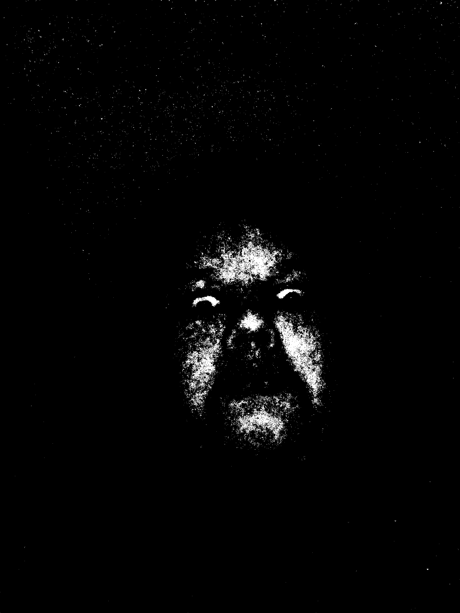

SCP NUMBER ONE. Class: 6
This image depicts lucas-29. lucas-29, dubbed "Mr. Messy" was brought to the foundation in 2011 after receiving multiple tips from government officials about a potential anomaly at an A&W fast food restaurant in Eatonton, Georgia. On the arrival of special force armed foundation workers, the subject could be seen rocking back and forth in a booth with a meal of burgers, fries, and soda in front of him. All workers of the restaurant were asked to leave and later were disposed of for security reasons, aside from 22 year old Freddy Richards, and 32 year old Ronny Ludwig, who were brought into the foundation for info and later kept as foundation test subjects. By the time the site was secured, the anomaly began slamming on the table once all of the food potentially brought to him by the workers, was consumed. According to eye-witnesses, he shouted phrases like "Hungry! Hungry!", and "Give Burgers!" After approximately 3 minutes of this state, lucas-29 pointed at personnel-member-943. The being continued pointing at the worker for 5 seconds with a not before seen facial expression while allegedly making high pitched ringing noises originating from his mouth. The worker collapsed on the floor and began convulsing as lucas-29 ran up to the injured man and began ripping him apart and eating him while laughing and saying phrases such as "Best Bungo Burger ever!". After this unfortunate event, the being returned to his state of pounding on the table and demanding food. Backup forces were called in, and food was given as requested. The subject laughed and slapped the table on seeing the offered food, and began eating it. The foundation used 231 burgers during this time to avoid loss of more personnel members.The attached photo, Evidence-Piece-46, was recovered from the body cam of a now deceased worker from another recorded event NLE-88 that same day. lucas-29 halted his meal 23 minutes in and looked up at one of the workers. "I want a soda pop." he said. The worker, thrown off by this sudden remark, stumbled his word and was reported to have responded "Uhh yo- you.. not at the moment we're dealing with something." This caused a similar state in lucas-29 as before as he pointed at the worker and emmited a ringing noise. The worker began convulsing and bleeding from his mouth, before the subject lunged on him and began consuming his corpse.
lucas-29 is now housed at facility 78. As per special containment procedures put in place, at least 234 A&W burgers are brought to his chamber via an airtight lock for the beings consumption. This procedure was put in place after NLE-98 when lucas-29 began slamming on the walls of his chamber, puncturing through and devoured 12 staff members. We are not yet sure how lucas-29 was able to break through the tungsten linings in the walls, but it was decided that the cost of the burger meat was worth the security of the foundation.
Project-ULH, being conducted and lead by researcher Edward Jim focuses on researching potential extermination methods of the being after it was deemed unsafe for further experimentation and housing.
 Event NLE-98 is an event in which Lucas-29 was experimented on, this experiment was to test what would happen if Lucas-29 was fed something that isn't A&W burgers, McDonald's and Burger King burgers were supplied in Lucas-29's containment chamber, where lucas-29 refused to eat his food, and was getting agitated. Lucas-29 preceeded to slam against the walls of his chamber yelling "Hungry! Burgers!" he continued to beat the wall for 10 minutes which stopped when he broke through the wall, and breached containment, the image shown was found on a personnel's bodycam after Lucas-29 had cut all electricity from the building and went on his rampage, killing 12 staff members. Lucas-29 was relocated to facility 78 and given a constant stream of A&W burgers, which he eats at an incredible pace.